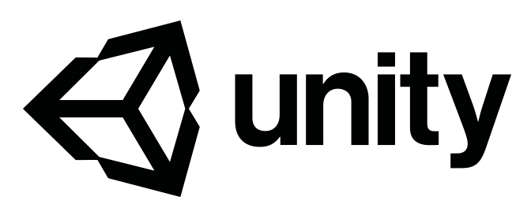
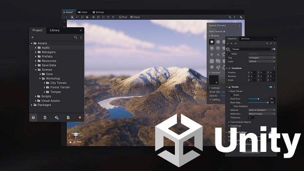
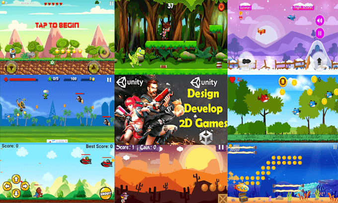
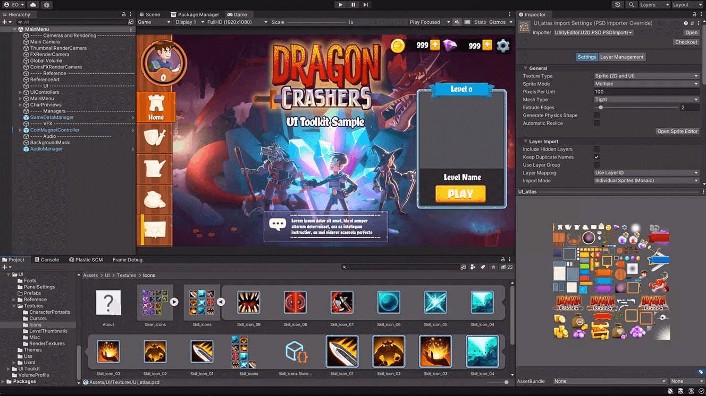
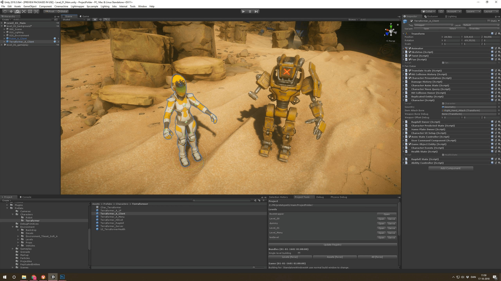
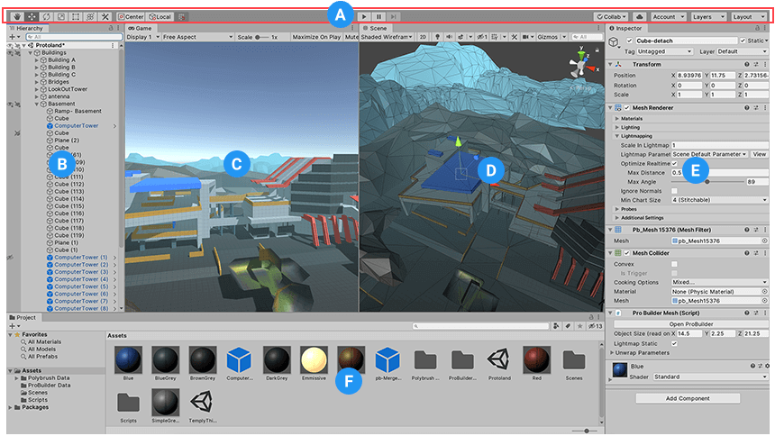
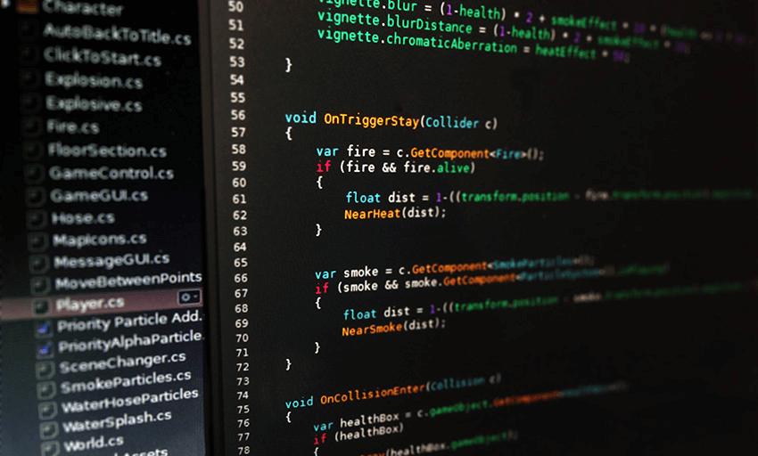
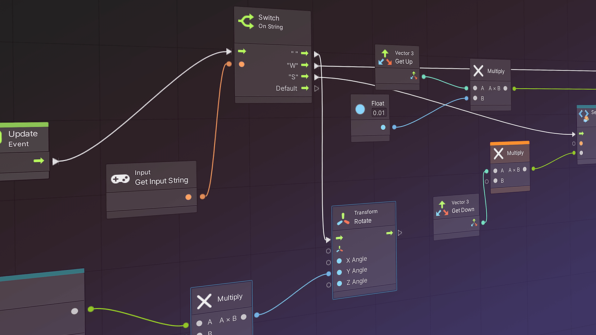
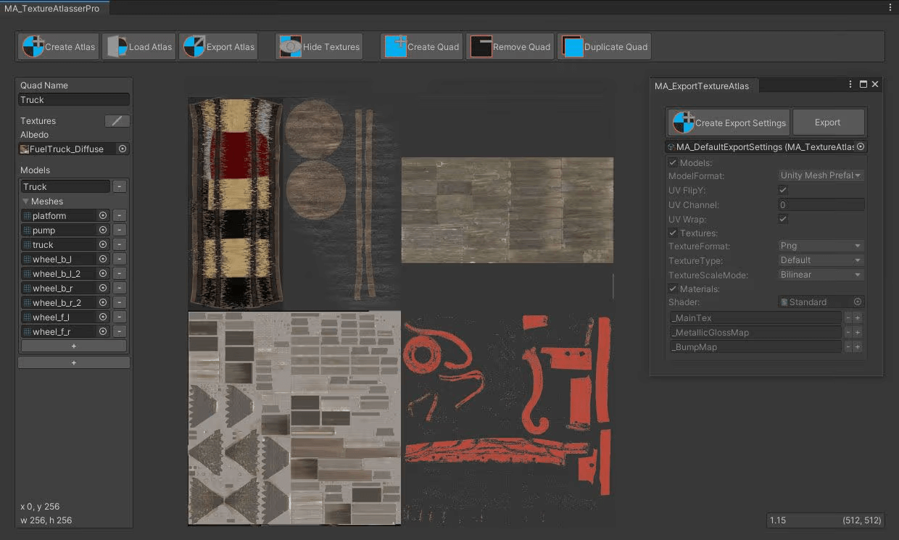
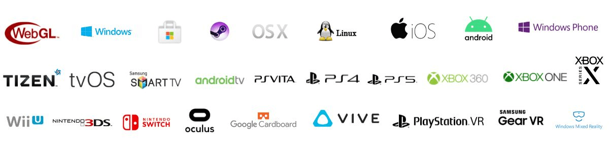

Unity es lo que se conoce como un motor de desarrollo o motor de juegos.

El término motor de videojuego o game engine, hace referencia a un software el cual tiene una serie de
rutinas de programación que permiten el diseño, la creación y el funcionamiento de un entorno interactivo;
es decir, de un videojuego.
Dentro de las funcionalidades típicas que tiene un motor de videojuegos, son las siguientes:
- Motor gráfico para renderizar gráficos 2D y 3D
- Motor físico que simule las leyes de la física
- Animaciones
- Sonidos
- Inteligencia Artificial
- Programación o scripting
- Etc, etc

Podemos resumirlo en que se trata de un entorno completo para el diseño y desarrollo de videojuegos.
No obstante, esta herramienta es mucho más y tiene aplicaciones fuera de esta popular industria.
Unity es un sistema, un software que ofrece multitud de posibilidades a desarrolladores y estudiantes de
diseño de videojuegos.
Para estudiantes y pequeños desarrolladores se trata de una herramienta gratuita hasta un máximo de 100.000€
de facturación anual. A partir de esa facturación, Unity cobra un porcentaje de las ventas del producto
desarrollado con su plataforma.
No obstante, también cuenta con opciones de pago para empresas que van desde los 1.400 a los 4.500€ de pago
anual.

Como ya estarás viendo, Unity, antes llamado Unity 3D, es un software que centraliza todo lo necesario para
poder desarrollar videojuegos. Es decir, Unity es una herramienta que te permite crear videojuegos para
diversas plataformas (PC, videoconsolas, móviles, etc.) mediante un editor visual y programación via
scripting, y pudiendo conseguir resultados totalmente profesionales.
Prueba de ello son juegos muy famosos creados con Unity; tales como “Monument Valley”, “Gris” o “Cuphead”.
Además, es muy utilizado en la mayoría de desarrollos de videojuegos para móvil.
Uno de los grandes puntos fuertes que tiene Unity es la gran comunidad de usuarios que tiene. Esto permite
tener acceso a multitud de documentación, foros y comunidades donde se preguntan y resuelven dudas, donde se
explican diferentes métodos y técnicas nuevas, etc.
Además, es uno de los motores predilectos para aprender a desarrollar videojuegos; ya que supone una puerta
de acceso perfecta para aquellos que quieren incursionar en esta industria.
¿Por qué insistimos en que Unity es un entorno de desarrollo? Pues porque cuenta con todo lo necesario para
que los diseñadores, programadores y artistas de videojuegos puedan trabajar.
Así, aunque Unity parte de empezar simplemente como un motor gráfico, ahora mismo incluye muchas más opciones,
desde programación hasta motores de físicas y elementos para la creación e incorporación de assets gráficos,
animaciones, etc.
Unity tiene un motor gráfico que permite crear tanto escenas en 2D como escenas en 3D.
Inicialmente estaba enfocado hacia el desarrollo casual e independiente, pero, con las últimas versiones y la
integración en una plataforma completa de desarrollo, se ha ido mejorando mucho.
A día de hoy, es uno de los motores gráficos de referencia en la industria.

El motor de físicas de Unity hace que se apliquen las leyes de la física a los objetos que forman parte de la
escena en la que estemos trabajando. Así, los objetos que hay en la misma se ven afectados por la gravedad y
la interacción con otros objetos de la escena.
Hay que tener en cuenta que, por defecto, los objetos en Unity ni chocan ni interactúan entre ellos. Para que
eso llegue a suceder hay que aplicar componentes determinados y establecer los parámetros que queramos.
Por ejemplo, si el objeto en concreto tiene que caer a plomo, hay que indicar un punto de choque, si no, caerá
hasta el infinito.

La interfaz de usuario de Unity es, en si misma, una herramienta integrada para el diseño y desarrollo de
videojuegos.
Dentro de este entorno nos encontramos con varios paneles. Los más relevantes son:
(A) La barra de herramientas proporciona acceso a las funciones de trabajo más esenciales. A la
izquierda, contiene las herramientas básicas para manipular la vista de la escena y los GameObjects
que contiene. En el centro se encuentran los controles de reproducción, pausa y paso a paso. Los
botones de la derecha dan acceso a Unity Collaborate, Unity Cloud Services y su cuenta de Unity,
seguidos de un menú de visibilidad de capas y, finalmente, al menú de diseño del editor (que ofrece
diseños alternativos para las ventanas del editor y permite guardar diseños personalizados).
(B) La ventana Jerarquía es una representación jerárquica de texto de cada GameObject de la escena.
Cada elemento de la escena tiene una entrada en la jerarquía, por lo que ambas ventanas están
intrínsecamente vinculadas. La jerarquía revela la estructura de cómo los GameObjects se conectan
entre sí.
(C) La vista del juego simula el aspecto final del juego renderizado a través de las cámaras de la
escena. Al hacer clic en el botón Reproducir, comienza la simulación.
(D) La vista de la escena permite navegar y editar visualmente la escena. La vista de Escena puede
mostrar una perspectiva 3D o 2D, según el tipo de Proyecto en el que esté trabajando.
(E) La Ventana del Inspector le permite ver y editar todas las propiedades del GameObject seleccionado.
Dado que los diferentes tipos de GameObject tienen diferentes conjuntos de propiedades, el diseño
y el contenido de la ventana del Inspector cambian cada vez que selecciona un GameObject diferente.
(F) La ventana del Proyecto muestra la biblioteca de recursos disponibles para su proyecto. Al importar
recursos al proyecto, estos aparecen aquí.

Estos son los elementos básicos de la interfaz que necesitas conocer para empezar a entender cómo funciona Unity y para aprender a trabajar con esta herramienta de desarrollo de videojuegos.
A mayores de ser una herramienta con la que puede ser sencillo aprender a hacer pequeños juegos sin muchos conocimientos de programación, Unity incorpora la posibilidad de escribir el código del juego.
Unity funciona con C#, un lenguaje de programación general completo y bastante sencillo de aprender. Además,
desde la propia web de Unity se puede acceder a distintos tutoriales con una introducción sencilla a scripting
con este código.
Además de C#, Unity también soporta de forma nativa UnityScripting, un lenguaje diseñado específicamente para
usar con la herramienta y que se basa en JavaScript.

Los scripts en Unity se crean directamente dentro de la herramienta dentro de la carpeta que el usuario
seleccione para ello. Cuando se abre el script, se inicia un editor de texto propio (aunque se puede
externalizar a otro) en el que podemos editar lo que consideremos.
Para que el script creado funcione hay que asignar una instancia del mismo al objeto deseado y que debe estar
ya en la escena del programa. Una vez hecho esto, el script debería realizar la acción deseada y puede verse
al darle al play en la escena del juego.

Un buen rendimiento es clave en los videojuegos. Unity cuenta con opciones para mejorar esto a través de la optimización de aspectos clave.
Algunos consejos para mejorar el rendimiento son:
- Encuentra donde puede haber problemas de rendimiento, si en la GPU o en la CPU. Dependiendo de cual
sea el problema habrá soluciones distintas.
- Para mejorar el rendimiento es mejor no usar más triángulos de los necesarios
- Utilizar menos materiales en los objetos creados para mejorar la performance de la CPU al ejecutar el
juego
- Emplear menos elementos que pueda causar un renderizado múltiple que consuma muchos recursos en la CPU
- Mantener la cantidad de vértices por debajo de 200.000 cuando se trabaja para PC.
- Utilizar texturas comprimidas cuando se pueda y en 16bits en ligar de en 32bits
- Minimizar las operaciones matemáticas complejas
Estos son solo algunos ejemplos, para saber como actuar para cada caso concreto lo mejor es formarse e ir
practicando con la herramienta. Es el mejor proceso para entender a fondo como funciona Unity.

Otro de los puntos clave de cómo funciona Unity es su utilidad multiplataforma. Es decir, Unity es una
herramienta que permite exportar los proyectos a distintas plataformas de juego: da soporte a PC, Mac OS,
Linux, Android y las principales consolas del mercado.
Esto es otro de las cosas a tener en cuenta cuando se trabaja en desarrollo de videojuego: ¿en qué
plataformas queremos que salga nuestro título?

Como puedes ver, Unity es, junto con Unreal Engine y al margen de herramientas propias de estudios grandes,
una plataforma tremendamente importante dentro de la industria de los videojuegos. Se trata de un software
que debes dominar si quieres convertirte en desarrollador de videojuegos.
Así que ahora, después de esta introducción a cómo funciona Unity, llega el momento de que profundices en
la herramienta. Y no hay mejor manera de empezando a practicar.